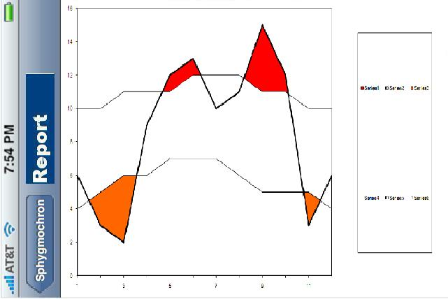

<!DOCTYPE HTML PUBLIC "-//W3C//DTD HTML 4.01 Transitional//EN">
<html><head>
<meta content="text/html;charset=ISO-8859-1" http-equiv="Content-Type"><title>Cell Phone UI, Phoenix Project team</title></head>
<body style="background-color: rgb(255, 255, 255);">

<div class="Section1">
<blockquote style="margin-top: 5pt; margin-bottom: 5pt;">
  <h2 style="text-align: center;"><a name="mozTocId861890"></a></h2>

  <h2>
  <center><st1:city><st1:place><span style="color: rgb(0, 153, 0);"><font color="#009900">Phoenix</font></span></st1:place></st1:city><span style="color: rgb(0, 153, 0);"><font color="#009900">
Ambulatory Blood Pressure Monitor Project<br>

  <u>Sub-project: </u></font></span><span style="color: rgb(0, 153, 0); text-decoration: underline;" editable="true" id="SubprojectName">Cell Phone UI, Phoenix Project team</span></center>

  </h2>In
this first attempt to see what screens might look like, a iPhone
software development kit was used to produce images. &nbsp;It is just a
prototype of the images; it does not represent any real interface
between a cell phone and a blood pressure monitor.<br><br>The text for the "About" screen is a modified copy of text from the Spygmochron.org web site.<br><br>There are no screens here yet for the "settings" functionality.<br><br>For an immediate blood pressure reading, the idea is the user clicks the "+" in&nbsp; the upper right of the main page.<br><br>Also,
we will need to figure out feedback to the user that the
device&nbsp;previously paired is not within reach as an overlay to the
main panel,&nbsp;in addition to low battery and other error codes.<br><br><br><table style="text-align: left; width: 682px; height: 595px;" border="0" cellpadding="2" cellspacing="5"><tbody><tr><td></td><td></td><td></td></tr></tbody></table><br><br><br><br><br><br><br><br><br><br><br><br><br><br><br><br><br><br><br><br><br><br><br><br><br><br><br><br><br><br><br><br><br><br><br><br><br><br><br><br><h3><br></h3><h3>Volunteers Are Needed</h3>

  <p>Would
you like to work on any part of this project? &nbsp;Envision a
prototype for a specific cell phone, propose a way to implement it, and
send
your suggestion
to <a href="mailto:labeaty@ieee.org?Subject=Data_Acquisition_Device_Prototype">Larry</a>. &nbsp;Or start out by just asking questions.<br>

  </p>

  <h3><a name="mozTocId667544"></a><font face="Times New Roman">About
This Page</font></h3>

  <p>This page is maintained by <a href="mailto:labeaty@ieee.org?Subject=Data_Acquisition_Device_Prototype">Larry
A. Beaty</a>. &nbsp;It was last updated on 10 October 2009.</p>

  <p>The author(s) provide this information as a public service,
and agree to place any novel and useful inventions disclosed herein
into the public domain. They are not aware that this material
infringes on the patent, copyright, trademark or trade secret
rights of others. However, there is a possibility that such
infringement
may exist without their knowledge. The user assumes all responsibility
for determining if this information infringes on the intellectual
property rights of others before applying it to products or services.</p>

  <p>(C) 2009 Larry A. Beaty, A.Chase Turner. Copying and distribution of this
page
is permitted in any medium, provided this notice is preserved.</p>

  <p></p>

  <center><a href="../../index.htm">Back to the Phoenix
Home Page</a></center>

  <p></p>

  <p>&nbsp;</p>

</blockquote>

</div>

</body></html>